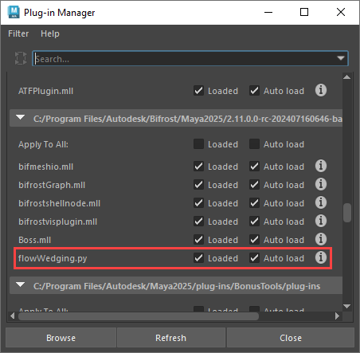
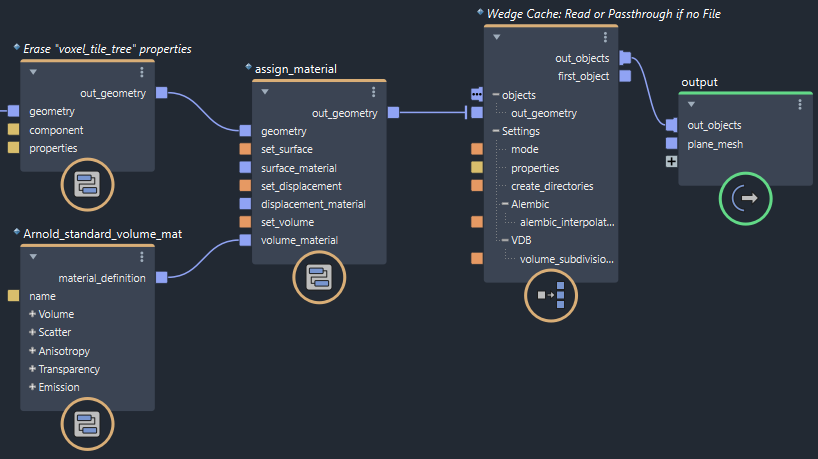
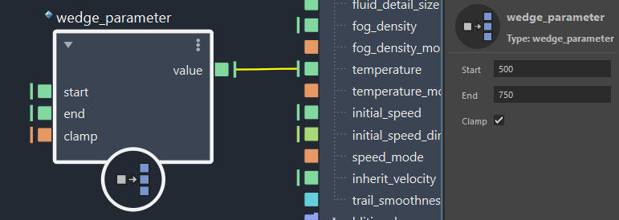
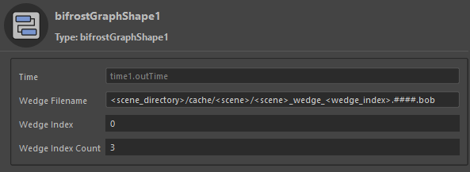
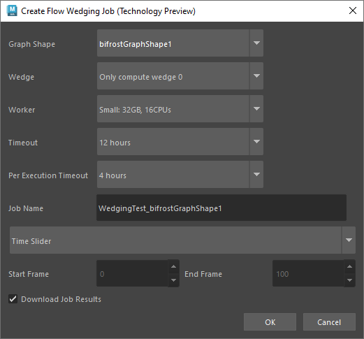
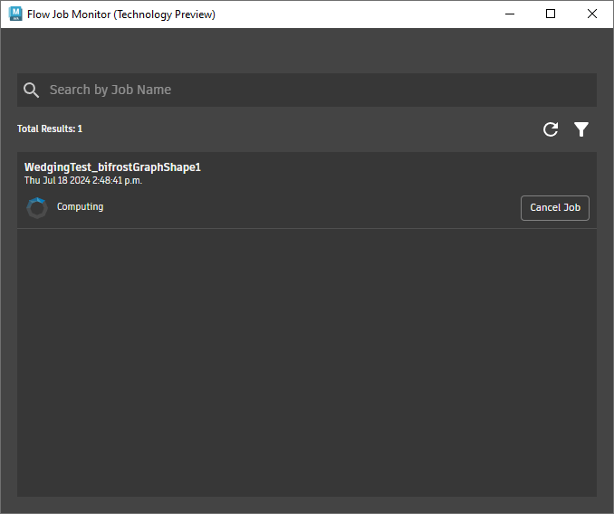
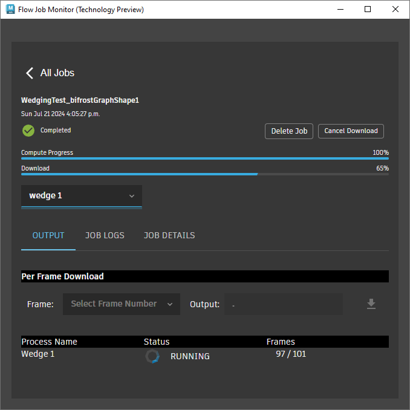
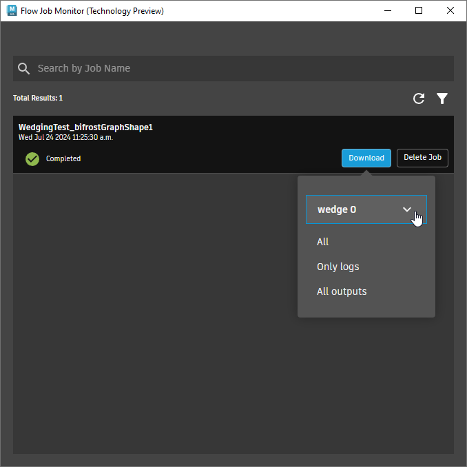

下面简要概述了使用 Flow Wedging 技术预览版对 Bifrost 图表输出进行楔形化处理的基本步骤。如果您更希望查看已设置的示例，请尝试使用 Bifrost 浏览器中提供的 aero_commbustion_wedging 示例图。
Flow Wedging 插件随适用于 Maya 的 Bifrost 一起安装，但可能未加载。
打开 Maya 的插件管理器：“窗口 > 设置/首选项 > 插件管理器”(Windows > Settings/Preferences > Plug-in Manager)。
确保已加载 flowWedging.py。

如果要经常进行楔形化处理，可以将其设置为“自动加载”(Auto load)。
Flow Wedging 需要图表中的特殊节点：主要是用于写入和读取缓存文件的 wedge_cache，以及用于确定变化的 wedge_parameter 等其他节点。
在开始之前，最好从要进行楔形化处理的对象中删除不必要的特性。例如，对于燃烧效果，可能只需要 voxel_fog_density、voxel_temperature 和 voxel_velocity 来渲染结果，可以擦除仅用于计算连续帧的任何其他特性。这有助于将下载的缓存文件的大小保持在最小。
erase_property 或 erase_component_properties 可移除最终缓存中不需要的数据。确保保留对对象几何体类型必不可少的特性，例如 *_component、*_offset、voxel_tile_tree 等。file_cache 节点在本地缓存几帧，以检查其文件大小。将 wedge_cache 节点添加到图表的顶层，然后连接要楔形化处理到 objects 端口的对象。

wedge_cache 节点的输出最终必须导向 output 节点。如果仅连接到 terminal 节点，则楔形化处理不起作用。wedge_cache 节点之前指定材质，以便将该材质包含在缓存中（如果生成了预览渲染，也会包含在缓存中）。例外情况是，当您计划对缓存使用 VDB 格式时，由于 VDB 格式不支持材质指定，因此请在 wedge_cache 之后指定材质，以确保在读取缓存文件后正确应用材质。wedge_cache 节点。Flow Wedging 将仅处理它在图表中找到的第一个为作业所选的节点。但是，可以将多个对象连接到 objects 串联输入端口，以数组形式处理多个对象。wedge_cache 节点的 mode 设置为“Read or Passthrough if no File”。在此模式下，一旦缓存文件在此过程中稍后存在，它将自动读取缓存文件，但由于您尚未下载任何缓存文件，因此它会改为对上游节点进行解算，并将结果直接传递到下游节点。 将 wedge_parameter 节点连接到要改变的输入，然后为要测试的范围设置 start 和 end 值。根据您在稍后步骤中指定的楔形数量，楔形将在这些值之间均匀分布。例如，如果仅有一个楔形，则将在 start 和 end 之间的中点处对其进行解算；两个楔形将在 start 和 end 处精确解算；三个楔形将在 start、中点和 end 处解算；四个楔形将在 start、1/3 范围、2/3 范围和 end 处解算。

start 和 end 是设置为 float 类型的 auto 端口。要改变其他类型（如 vector3），请在任一端口上单击鼠标右键，然后选择其他值类型或连接所需类型的值。wedge_parameter 节点来改变多个输入。但是，它们不会单独改变，而是根据要解算的楔形，在各自的 start 和 end 值之间同步改变。wedge_parameter 节点，仍可以提交作业。如果只想将缓存文件的生成转移到远程服务，而不进行任何楔形化处理，这可能会非常有用。wedge_parameter 的替代方法，可以使用 wedge_index 返回要解算的楔形的索引（0、1、2 等），并使用自定义逻辑指定每种情况的输入值。在图表的顶层，取消选择所有节点。图表的作业端口将显示在“参数编辑器”(Parameter Editor)中。根据需要设置“楔形”(Wedge)值。

Wedge Filename 是用于下载缓存的完整路径和文件名。没有标记的路径对单个缓存有效，但请记住，应使用 <wedge_index> 标记，以确保不同的楔形不会覆盖彼此的文件。可以使用 $name 或 ${name} 形式的环境变量，这些变量将在标记被替换后扩展。扩展名可确定缓存文件的格式：.bob 适用于 Bifrost 对象文件（任何对象）、.abc 适用于 Alembic 文件（网格、粒子、股）或 .vdb 适用于 VDB 文件（体积）。任何其他扩展名都将作为 Bifrost 对象文件写入。 Wedge Index 指定在下载缓存文件后要读取的缓存文件集。如果选择不在单个作业中解算所有楔形，也可以使用它指定要解算的楔形。Wedge Index Count 设置要解算的楔形总数。它还用于计算 wedge_parameter 节点 start 和 end 值之间范围的分数。每个作业的最大楔形数为 4。Flow Wedging 可以生成 Arnold 预览渲染，您可以在“Flow Job Monitor”中进行检查。需要注意的是，目前还存在一些限制，工作流今后可能会有所改变。特别是：
assign_material 或类似节点将材质指定给图表中的缓存输入（而不是缓存输出）。standard_surface_mat 或 Arnold_standard_volume_mat），而不是从主场景中引用。在 Maya 场景中，创建一个变换组并将其命名为 preview。
在此组下，为要用于预览的任何灯光设置父对象。
在图表准备好进行楔形化处理后，您就可以提交作业了。
从 Maya 主菜单中选择“Flow Graph Engine > Flow Wedging (Technology Preview) > Create New Job”。根据需要登录帐户后，将启动“Flow Job Monitor”窗口，并打开“Create Flow Wedging Job”对话框：

根据需要设置选项：
wedge_cache 节点的图表，请确保将“Graph Shape”设置为要针对此作业解算的图表。单击“确定”(OK)。图表和任何连接的场景对象将上载到 Flow Wedging 服务，“Flow Job Monitor”将显示进度。

在后台计算作业时，可以关闭“Flow Job Monitor”，然后选择“Flow Graph Engine > Flow Wedging (Technology Preview) > Open Job Monitor”，随时将其重新打开以监视进度。单击特定作业可查看详细信息、日志文件、播放预览渲染等。

如果在提交作业时选中了“Download Job Results”，则会自动下载缓存文件。如果取消选中该选项、在下载完成前退出 Maya 会话，或者只是需要再次下载，也可以从“Flow Job Monitor”手动下载。
缓存结果可在 30 天内下载。如果删除作业，则无法恢复缓存结果。
打开“Flow Job Monitor”。
找到要下载的作业，然后单击“下载”(Download)。

如果作业中有多个楔形，请选择一个楔形。
选择要下载的项目（例如，“All”或“Only logs”）。
浏览并选择磁盘上用于存储下载文件的文件夹。您无需选择在 wedge_cache 节点上设置的“Wedge Filename”位置，但请注意，在使用新位置更新该参数之前，图表不会读取下载的缓存文件。
只要楔形的前几帧可用，就可以开始在场景中快速浏览结果。
在图表的顶层，取消选择所有节点。
将 Wedge Index 设置为要查看的楔形的索引：0 表示第一个楔形，1 表示第二个楔形，依此类推。您可能需要更改帧才能看到视口更新。
播放或拖动时间轴。